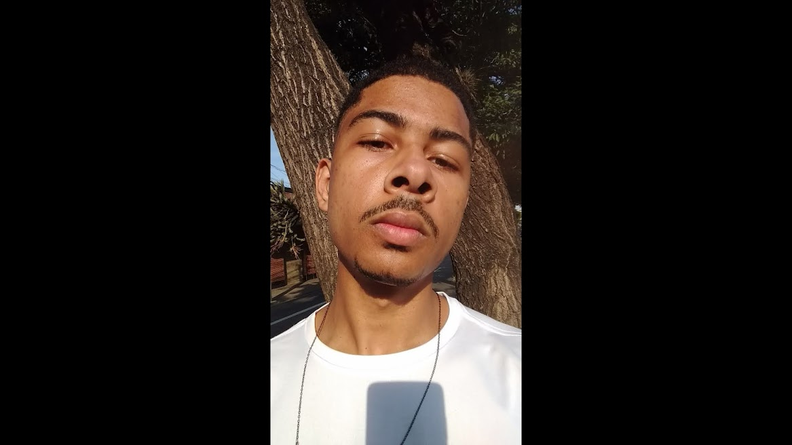

Eu sou Alexandre Oliveira dos Santos (ou só xand)
Vivendo um dia de cada vez e acreditando no processo. Vivendo um dia de cada vez e acreditando no processo
Vivendo um dia de cada vez e acreditando no processo

A descrição virá despois da foto.
Sobre:
Brasileiro, morador de Hortolândia/SP, com experiência em desenvolvimento de software,atualmente estudante
de Desenvolvimento Web pela Trybe, com habilidades em xadrez e em jogos online. Defensor do estilo de vida ativa
ndependente do esporte, aspirante a psicólogo(nunca com conselhos) e anti-coach.
Lista de Habilidades:
-Pensamento crítico
-Resiliencia(quem sabe um anti-frágil)
-
Link pra minha foto
Aqui haverá um link para o blog
Coisas que faltaram:
-Um índice com links internos para as diferentes seções do seu portfólio.
-Partes do seu portfólio destacadas com negrito e/ou itálico;
Coisas plus:
-Contato/+Imagens/Design